77 wide-shot frames from the April 8 class. This is a stage-filmed talk, not a screen share — the camera cuts constantly to close-ups where the slide text is a full-bleed background sliced by his head. Those 118 frames were pulled out; what is left is every frame where the whole slide is readable. Click any frame for full size. Caption shows the line spoken over it.
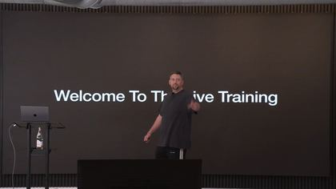
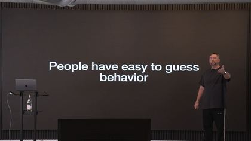
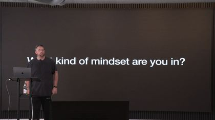
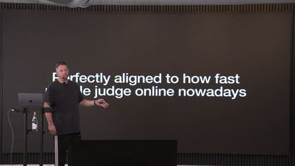
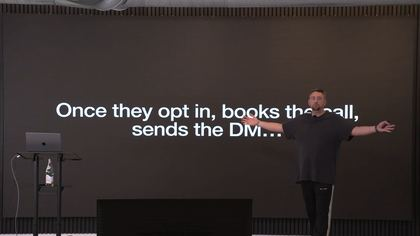
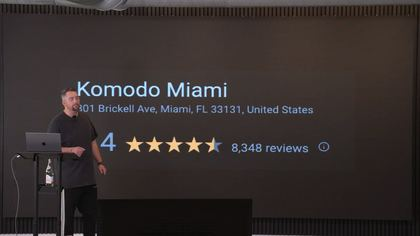
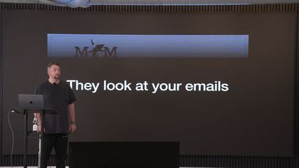
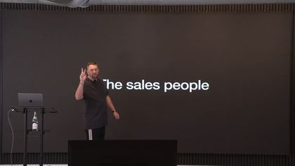
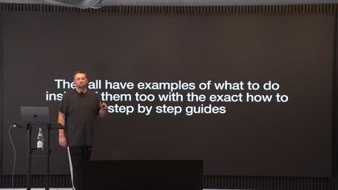
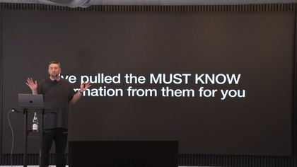
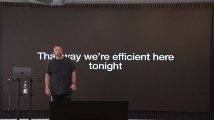
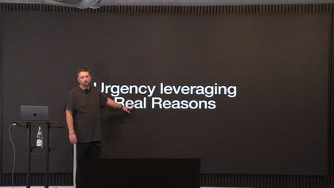
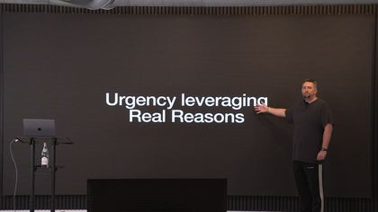
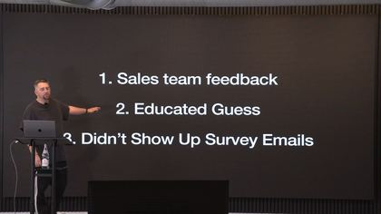
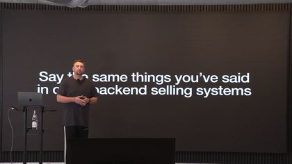
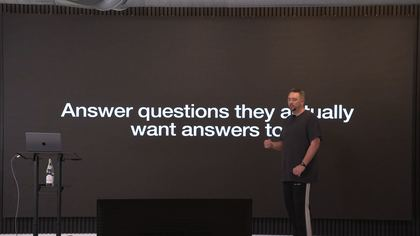
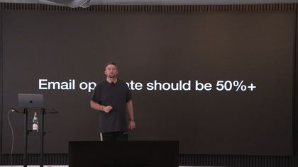
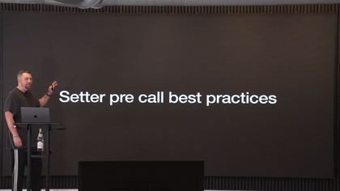
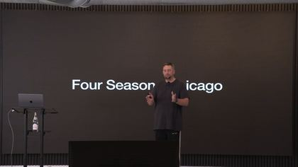
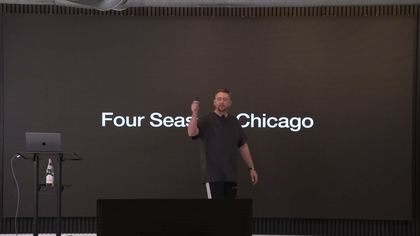
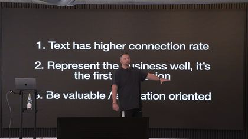
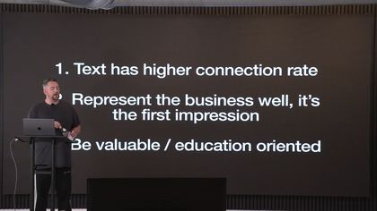
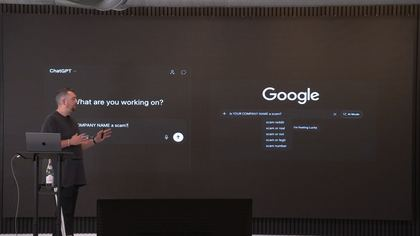
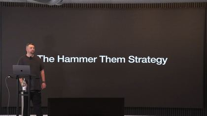
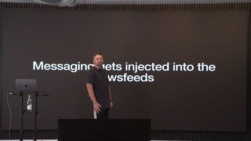
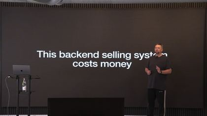
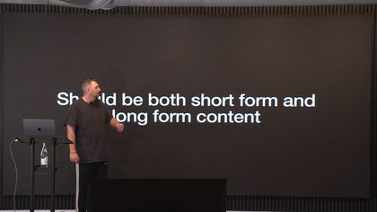
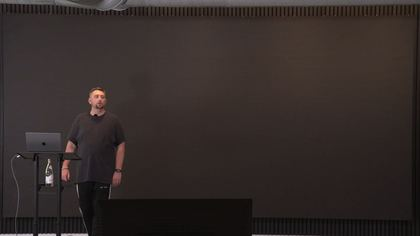
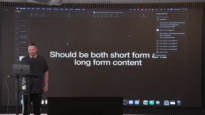
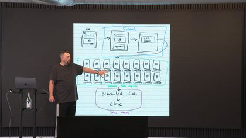
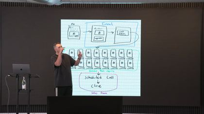
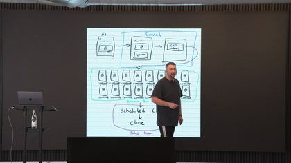
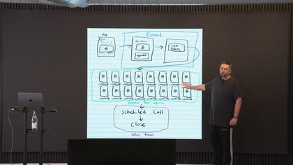
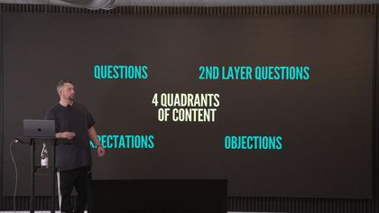
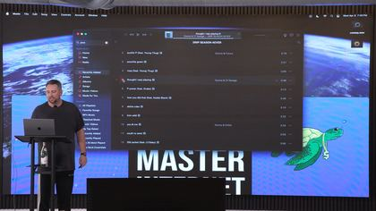
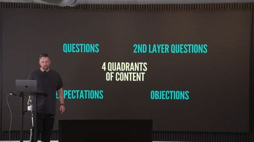
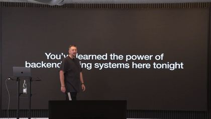
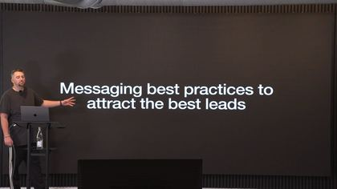
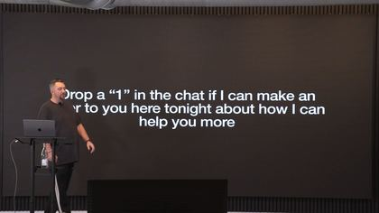
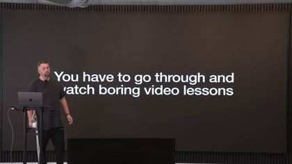
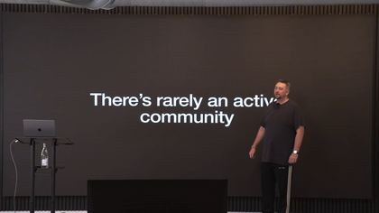
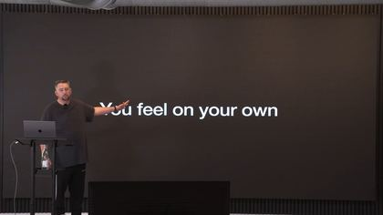
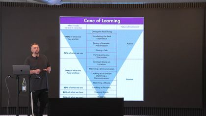
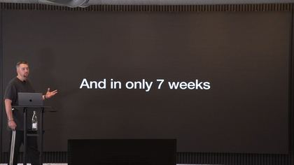
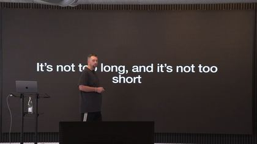
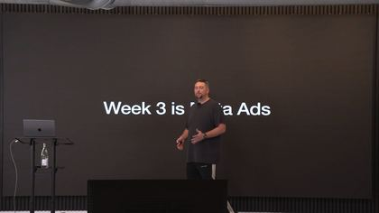
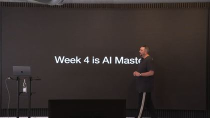
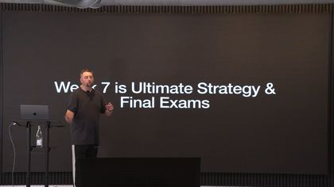
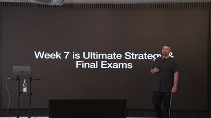
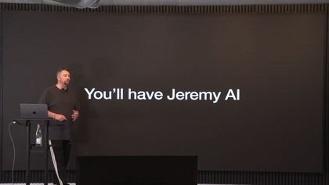